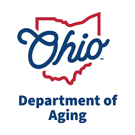
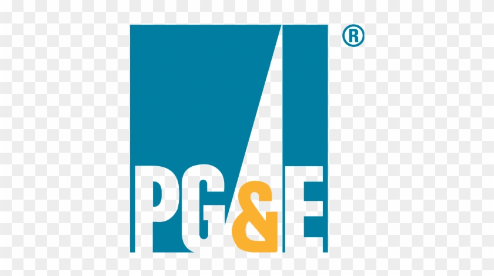

Work Experience

Data Engineer — State of Ohio — Columbus, OH
May 2025 – sep 2025
- Led requirements refinement and delivery lifecycle for Oracle migration (~10M records), producing BRD/FRD and technical acceptance criteria.
- Developed Databricks PySpark jobs and ADF pipelines to integrate, transform, and validate data; applied schema evolution and checkpointing for reliable workloads.
- Authored and optimized stored procedures and MERGE logic in Synapse/SQL for incremental loads, improving runtime 40%.
- Built monitoring and quality controls with Azure Monitor + Log Analytics, enabling proactive triage and reducing MTTR 45%.
- Mentored junior engineers on CI/CD pipelines (Azure DevOps), TDD practices, and code reviews, cutting change failure rate 30%.
- Deployed private endpoints, storage firewalls, and RBAC; integrated RLS for downstream models to meet HIPAA requirements.
- Instrumented pipelines via Azure Monitor + Log Analytics, emitting run metrics (rows, latency, failures) and Action Group alerts to email/Teams; improved MTTR 45%.
- Introduced budgets/tags and autoscaling policies; paused non‑prod SQL pools off‑hours and used Databricks job clusters with auto terminate—lowering monthly compute ~15–20%.
- Set up Azure DevOps multi‑stage CI/CD for ADF JSON, Databricks notebooks, and Synapse SQL (build → test → release with approvals/rollback), cutting change failure rate 30%.
- Designed control tables (batch logs, checkpoints, error registry) and retry semantics; increased job success rate to 99.7%.
- Implemented incremental loads using SCN/watermarks and idempotent MERGE logic; reduced nightly processing time 40% and stabilized runtimes.
- Tuned staging performance with partitioning, indexing, bulk binds and Synapse distributions; reduced heavy‑join temp usage 30%
ADF | Azure Databricks | PySpark | Snowflake | Dataiku | Power BI | Azure DevOps | GitHub | Power Automate

Data Engineer — Kaizen Family Dental, Cincinnati, OH
Oct 2024 – Apr 2025
- Partnered with managers to define Salesforce CRM reporting needs, aligned ServiceNow workflow automation, and created SLA trackers that reduced redundant manual reviews and improved cycle times.
- Designed operational dashboards integrating Salesforce KPIs with ServiceNow intake data, delivering actionable insights to staff and boosting compliance with reporting policies.
- Facilitated Salesforce UAT sessions and handled ServiceNow ticket escalations, improving user adoption, decreasing defects by 20%, and streamlining dental claims resolution processes.
- Authored SOPs, governance documentation, and system usage guidelines to enhance transparency, reduce ticket backlogs, and improve compliance across multiple clinics.
- Built automated Power Query and Tableau reports, including paginated exports, saving 2+ hours per week in finance reporting cycles.
- Supported cross-functional analysts with query templates, certified datasets, and training sessions.
- Delivered quarterly audit views using ACCESS_HISTORY for governance compliance.
- Published “What’s New” digests for Snowflake features and recommended safe
- Created self-service analytics interfaces with parameterized queries, pre-aggregated tables, and query templates in Redshift and Tableau, increasing adoption by 30%.
- Monitored infrastructure and job performance using CloudWatch, CloudTrail, and SNS-based alerts, reducing SLA breaches and improving data pipeline uptime.
ADF | Azure Databricks | PySpark | Snowflake | Dataiku | Power BI | Azure DevOps | GitHub | Power Automate

Oracle Developer — Pacific Gas & Electricity (PG&E)
Apr 2024 – Sep 2024
- Automated daily report generation using Oracle Data Facilitated cross-functional workshops (field ops, customer care, billing) to capture requirements; produced BRD/FRD, BPMN maps, user stories, and acceptance criteria.
- Facilitated requirements workshops with stakeholders, documenting system needs via BRD/FRD, BPMN flows, and traceability matrices.
- Built and tuned Oracle SQL procedures and Power Query workflows for KPI dashboards, reducing refresh times by 40%.
- Introduced row-level security and governance across BI platforms, ensuring compliance with data access standards.
- Led UAT cycles (test scenarios, traceability, regression tests); improved first-pass test success rate from 70% → 92%.
- Collaborated with engineering teams to close data management gaps, reducing reporting defects and rework.
- Optimized DAX and Power Query steps; decreased dataset refresh time 40% and improved report load time 30%.
- Set up ServiceNow intake for data/report requests with SLAs and priority rules; cut request cycle time 25% and improved on time delivery to 95%.
- Authored data dictionary and KPI definitions; reduced metric ambiguity and ad hoc clarification churn 60%.
- Implemented automated distribution (subscriptions) and usage analytics; increased monthly active viewers from 45 → 110.
- Facilitated UAT across 3 squads; improved first pass test success from 70% → 92%.
- Mapped as is/to be processes and handoffs; removed redundant approvals and reduced rework 20%.
SQL | Power BI | Excel/Power Query | Jira | Azure DevOps | Visio/Lucidchart | ServiceNow

Associate (Data/Analytics) — Cognizant
Jun 2020 - July 2023
- Assisted in analyzing healthcare claims and operational data using descriptive statistics and trend analysis to support business reporting needs.
- Led data mapping and transformation efforts during Oracle Cloud ERP migration (PIM, Financials).
- Ensured 95%+ data integrity during SIT/UAT through automated Python scripts and manual QA procedures.
- Designed master data enrichment logic for Oracle cloud loaders to meet business rule requirements.
- Built and tuned SQL queries, PL/SQL scripts, and reconciliation reports supporting ERP migration and healthcare analytics.
- Authored data enrichment and validation logic for Oracle ERP loaders, ensuring >95% data integrity.
- Automated test scripts and participated in SIT/UAT cycles, reducing defect reopen rates 20%.
- Produced structured remediation reports with root cause analysis; accelerated test cycle turnaround.
- Collaborated across IT/business teams on data profiling, quality management, and governance documentation.
- Designed structured remediation reports highlighting failed records, root causes, and recommended fixes, accelerating
SQL | Power BI | Tableau | Python (Pandas, NumPy) | R | BigQuery | Excel